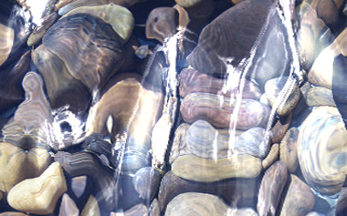
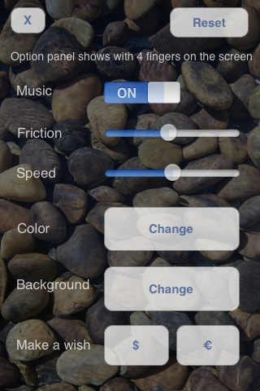
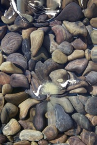
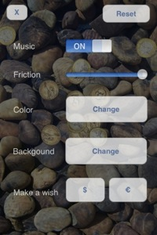
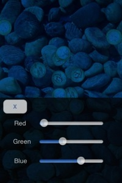
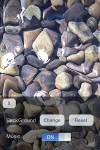
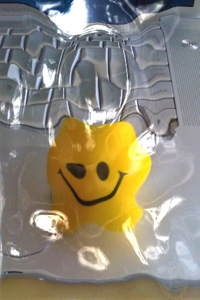

Fluid

I finally finished "Fluid", a FREE interactive water simulation for iPhone. While it is being reviewed by Apple,
here is a short article describing how it's done....and the source code ;) ! Download for iphone:
Video
Simulation
This water simulation uses a very old algorithm based on two heightmaps:
- Take the screen and slice it as a grid (the more slices, the better it looks). This is done via a double array (
int simulation1[][]), olding the height of each wave, - In order to animate, we will need an other array:
int simulation2[][], with the exact same dimension as simulation1. - To make everything move, use the following algorithm:
#define CURRENT_HEIGHTMAP (* simulation1)
#define PREVIUS_HEIGHTMAP (* simulation2)
for(x=1; x<=FLOTSIZE; x++)
for(y=1; y<=FLOTSIZE; y ++)
{
CURRENT_HEIGHTMAP[x][y] =
((PREVIUS_HEIGHTMAP[x-1][y]+
PREVIUS_HEIGHTMAP[x+1][y]+
PREVIUS_HEIGHTMAP[x][y-1]+
PREVIUS_HEIGHTMAP[x][y+1]) / 2) - CURRENT_HEIGHTMAP[x][y];
//Drag (otherwise water never stop moving)
CURRENT_HEIGHTMAP[x][y] -= CURRENT_HEIGHTMAP[x][y] * DRAG;
}
And that's it! Set an initial height perturbation in the last state, iterate at 30fps: Voila des vagues !
Rendition
From the heigthmap, we then generate a mesh. Assuming that every pixel ray come to the mesh at (0,0,-1), we can generate a perturbated View Vector. We use these pertubated vectors to offest the textures coordinates.
Performance
Right now, only reflection and refraction are simulated via a bottom texture and an environment map texture. The rendition requires two passes.
I tried to add the caustics but without multi texturing, this would have requiered a third pass, unafforable for now.
Running at 30fps:
- 179 200 fragments op/frame( 320 * 280 * 2).
- 13 680 vertices/frame. (6840 * 2)
- 6 960 faces/frame (3480 * 2)
Updates
February 23, 2011.Cannot see the menu in Fluid2 ?
In Fluid2 the menu does not appear automatically: You can bring it up by pressing FIVE FINGERS simultaneously on the screen :) !
October 26th, 2011.iOS 5 iPad: Disabled "album" button :( !
I've received numerous emails mentioning Fluid and Fluid2's "Choose from album" button is disabled for iPad users. The issue has been identified and and updated version has been sent to Apple. It should be out shortly ;) !
April 12, 2011.iPad "Change background" bug
I've received numerous emails from users mentioning they cannot select a picture from an album since they updated to iOS 4.3.1. It seems the last update broke this feature, but I have fixed this issue now and submitted a new build to Apple, hopefully it will be approved soon.
July 02, 2010.iOS 4 crash :( !
I've received numerous emails mentioning Fluid and Fluid2 crash on second launch after updating to iOS 4. I've worked around the clock to generate a patch and it is now sent to Apple. I've also contacted the hotline so it will be considered an emergency fix. I keep my finger crossed it won't take too long to get to you guys.
June 29, 2009.Is "Fluid" too fast ?!
A few person emailed me since the released of "Fluid v1.3". It seems that it is running too fast now. The reason this issue was undetected is that I am doing all my testing on my personnal iPhone (First generation). Fluid v1.3 is using the optimized engine of "Fluid 2" but I did not notice the change until I saw the application running on my friend's 3GS.
The solution
I'm getting a 3GS from the Apple Store this afternoon, I will release a fix tonight: "Fluid v1.4" and "Fluid 2.1". The speed will be constant with ability to control it further via a slider. I hope Apple won't take forever to released them.
Screenshot of the upcoming update

June 9, 2009.
3,000,000 downloads...version 2.0 released !
I am very proud to announce the release of "Fluid 2" on the Appstore !
Check it out:
More freedom on the menu:
- Ability to make a wish by throwing a coin in the water.
- Ability to change the color of that water.
- Ability to set the friction level.
- Option panel is now hidden by default.
- Lot and lot of bug fixes.


May 14, 2009.
1,000,000 downloads...version 1.2 coming !
Never I would have expected so many downloads. I've received numerous positive review for the version 1.1 of Fluid.
I'm working hard on fixing every bug reported, I just sent the version 1.2 to Apple:
- Background modification now works for any picture of any format.
- Music is no longer mandatory, iPod music will keep playing if you turn Fluid's music off.
- Music button never gets out of sync.
Next week, I will keep fixing bug in order to release a version 1.3...and also "Fluid Premium". Stay tuned.
May 9, 2009.
700,000 downloads...and counting !
Not bad for what was supposed to be just a "demo" during my job hunting process.
A lot of people have asked for a music and ability to change the background. Version 1.1 is currently being reviewed by Apple and will allow this:
- Option panel by pressing four fingers simultaneously.
- Ability to change background.
- Zen music (Lullaby by Ghost which you can listen here).
- Support for multi-fingers.

